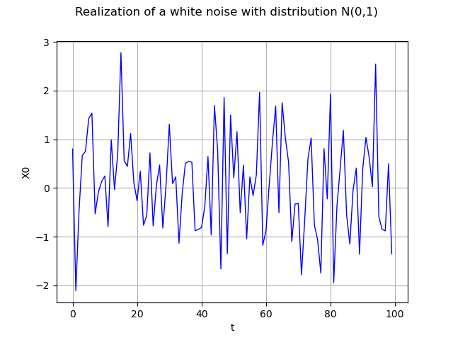
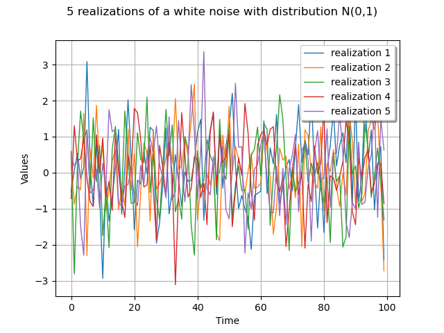

Note
Go to the end to download the full example code
Create a white noise process¶
This example details how to create and manipulate a white noise.
A second order white noise
 is a stochastic
process of dimension
is a stochastic
process of dimension  such that the covariance function
such that the covariance function
![C(\underline{s},\underline{t})=\delta(\underline{t}-\underline{s})C(\underline{s},\underline{s})]() where
where  is the covariance matrix of the process at
vertex
is the covariance matrix of the process at
vertex  and
and  the Kroenecker function.
the Kroenecker function.
A process  is a white noise if all finite family of
locations
is a white noise if all finite family of
locations  ,
,
 is independent and
identically distributed.
is independent and
identically distributed.
The library proposes to model it through the object WhiteNoise defined on a mesh and a distribution with zero mean and finite standard deviation.
If the distribution has a mean different from zero, The library writes message to prevent the User and does not allow the creation of such a white noise.
import openturns as ot
import openturns.viewer as viewer
from matplotlib import pylab as plt
ot.Log.Show(ot.Log.NONE)
Define the distribution
sigma = 1.0
dist = ot.Normal(0.0, sigma)
Define the mesh
tgrid = ot.RegularGrid(0.0, 1.0, 100)
Create the process
process = ot.WhiteNoise(dist, tgrid)
process
Draw a realization
realization = process.getRealization()
graph = realization.drawMarginal(0)
graph.setTitle("Realization of a white noise with distribution N(0,1)")
view = viewer.View(graph)

Draw a sample
sample = process.getSample(5)
graph = sample.drawMarginal(0)
graph.setTitle(
str(sample.getSize()) + " realizations of a white noise with distribution N(0,1)"
)
for k in range(sample.getSize()):
drawable = graph.getDrawable(k)
drawable.setLegend("realization " + str(k + 1))
graph.setDrawable(drawable, k)
view = viewer.View(graph)
plt.show()
